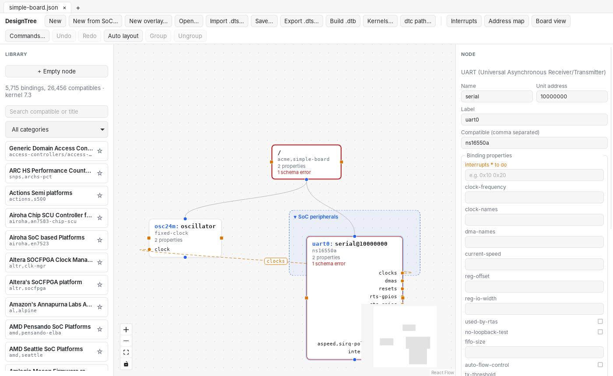
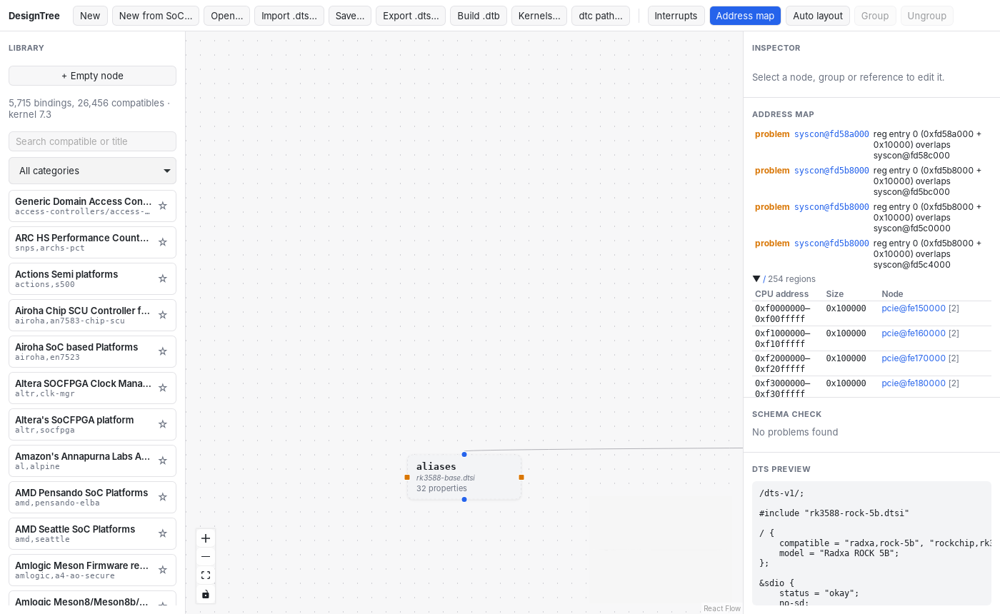
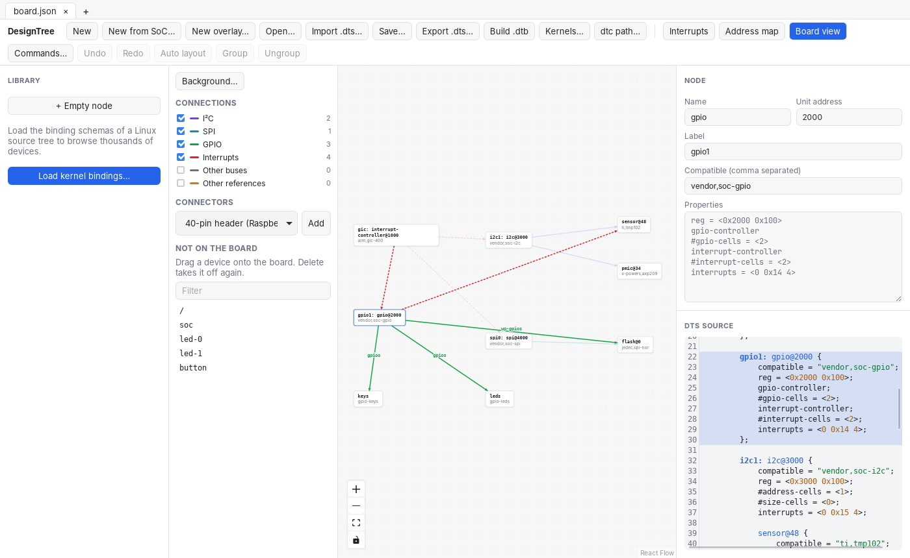

Draw the board. Get the devicetree.
DesignTree is a node editor for Linux devicetrees. Place devices on a canvas,
wire clocks, interrupts and GPIOs between them, and export kernel-style .dts
or a .dtb built with dtc. The library comes from the binding
schemas of your own kernel checkout.


For BSP maintainers
Open the board files you already have
#include chains and dt-bindings macros are resolved, the SoC's
.dtsi stays a .dtsi, and your changes are written back as
&label { } overrides in the original order. The diff stays small.
#include "rk3588-rock-5b.dtsi" &sdio { status = "okay"; no-sd; };

For board bring-up
Start from the SoC, add what your board has
Pick a SoC .dtsi from the kernel and describe only your board. Ports know
what they connect to: a UART's clocks only takes a clock provider, and the
specifier cells offer names like GPIO_ACTIVE_LOW.
The board view places devices over a photo or schematic, draws the buses between them, and maps a 40-pin header to SoC pads with conflicts flagged.
uart0: serial@1c28000 { compatible = "ns16550a"; reg = <0x01c28000 0x400>; interrupt-parent = <&gic>; interrupts = <GIC_SPI 0 IRQ_TYPE_LEVEL_HIGH>; clocks = <&osc24m>; reg-shift = <2>; };
Checked while you type
Schema errors before the build, not after
Every node is checked against its binding schema like make dtbs_check:
required properties, types, enums, conditions on the compatible. Problems sit on the
node that has them, next to dtc's own warnings.
Edit the DTS text or the canvas; the other side follows. Undo, copy and paste between tabs, and a command palette cover the rest.
Install
Arch Linux and Manjaro first
Build the package
With makepkg, from the repository:
git clone https://github.com/MauriLan91/designtree.git cd designtree/packaging/arch/designtree-git makepkg -si
Get a kernel checkout
The library is built from its binding schemas. A sparse clone is enough:
designtree/scripts/fetch-kernel-dts.sh ~/linux
Open it in the app
Start DesignTree from the menu, press Kernels…, add ~/linux and
follow the tutorial to a first .dtb.
Other distributions: an AppImage and a .deb come with every
release, with checksums and
signed build provenance. Windows and macOS installers come later; until then, build from
source as described in the install guide.